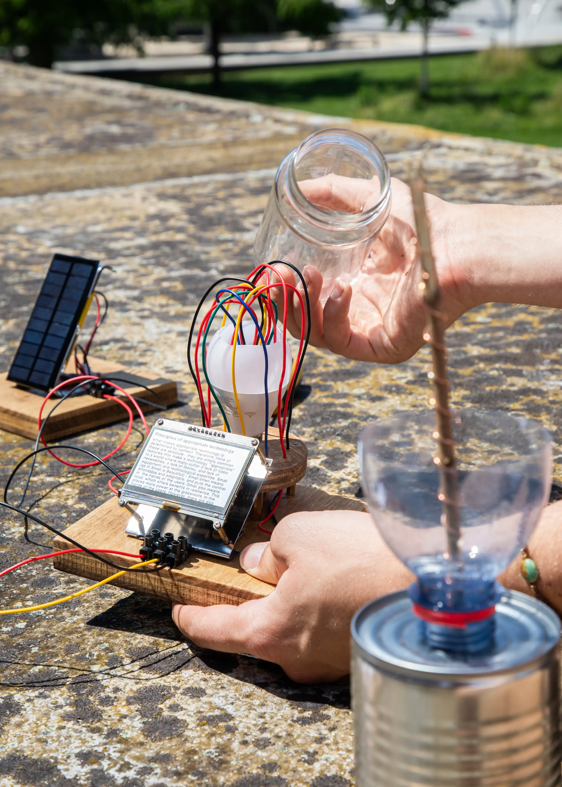

Net Weaving for Beginners envisions a radical alternative to the extractivist, fast-paced, and centralized infrastructures of today’s internet. It
explores how communities might reclaim and reimagine digital infrastructure in a future shaped by ecological crisis, energy scarcity, and technological
obsolescence. In this near future, groups of people come together to repurpose discarded IoT devices and e-waste into low-power, off-grid mesh networks
— weaving resilient webs of connectivity designed for knowledge sharing and mutual support.
These grassroots networks operate independently of centralized systems, continuing to function even during electricity cuts or internet shutdowns. Small
communities, from rural villages to urban neighborhoods, collaboratively maintain and grow their own nodes. Together, they exchange practical knowledge,
ranging from local farming practices to repair guides and low-tech manuals, creating a decentralized library of shared wisdom tailored to their specific
needs.
Accessing information across this low-tech network is inherently limited in speed and capacity. The interface encourages users to be intentional —
weighing quantity, detail, and urgency before each search, knowing their choices affect others. Results appear on a small screen and must be copied by
hand. The network is not built for speed or scale, but for resilience, care, and collective self-determination.
Net Weaving for Beginners opens up critical questions: What might computing look like in a degrowth future? How do we design digital technologies that
are modest, community-owned, and built to last? What happens when we root value in reuse and ecological well-being rather than endless growth?
Master Project
Félicien Goguey
ESP32, Solar, LoRa
Research, Concept, Design, Development, Setup
Research, Concept, Design, Development, Setup: Jonas Wolter
Tutor: Félicien Goguey
Technical Assistance: Pierre Rossel